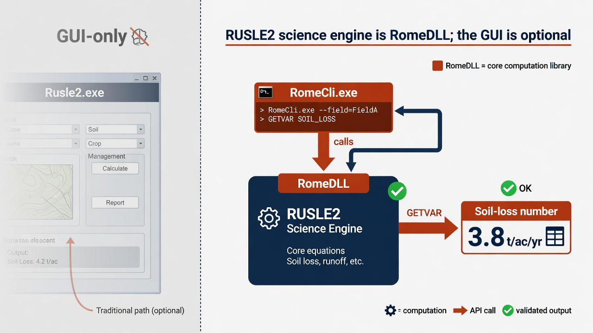

RUSLE2
The science engine is RomeDLL. Rusle2.exe is GUI-only. The lab verifies a headless GETVAR through RomeCli.

1. Get the software
Download RUSLE2 and the NRCS database from the NSERL RUSLE2 data web. Lab install: C:\Grok\Models\installs\RUSLE2 (installer archive\downloads\RUSLE2.exe, RomeDLL SDK under archive\downloads\romedll-sdk).
2. Stand in the script folder
cd C:\Grok\Models\installs\RUSLE2\scripts
3. Run
powershell -File .\rusle2_headless.ps1
That wrapper copies RomeDLL.dll, opens moses.gdb, and requests SLOPE_SOIL_LOSS for profiles\default.
4. Confirm success
The script prints SLOPE_SOIL_LOSS=… ton/ac/yr with a positive value.